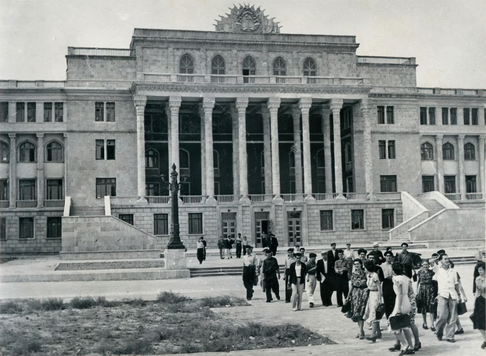

 Azərbaycanda texniki təhsilin əsası ilk dəfə 1887-ci ilin noyabr ayında Bakı şəhər Duması tərəfindən Bakıda texniki məktəbin yaradılması ilə qoyulub. Əvvəlcə bu məktəbin Mexanika şöbəsi üzrə 50, İnşaat şöbəsi üzrə 55 nəfərdən ibarət buraxılışı olub. 1916-cı ildə məktəbdə artıq 494 tələbə təhsil alırdı. Onlardan cəmi 20 nəfəri azərbaycanlı tələbələr olub. 1918-ci ildə verilən qərara əsasən məktəb Politexnikum adlanıb. 188 nəfər tələbəsi olan təhsil ocağında Neft sənayesi, Elektromexanika və İnşaat-memarlıq şöbələri fəaliyyət göstərib. O zaman Azərbaycanda cəmi 62 nəfər ali təhsillidən 12 nəfəri mühəndis olub.
14 noyabr 1920-ci ildə Azərbaycan İnqilab Komitəsinin sədri Nəriman Nərimanovun dekreti ilə tərkibində Neft sənayesi, Memarlıq-inşaat və Elektromexanika şöbələri olan Bakı Politexnik Məktəbinin bazasında ali texniki mütəxəssislər hazırlayan Bakı Politexnik İnstitutu yaradılıb. Bu institutun tərkibində beş fakültə - Neft sənayesi, Elektromexanika, İnşaat-mühəndis, Kənd təsərrüfatı və İqtisadiyyat fakültələri fəaliyyət göstərib.
Bakı Politexnik İnstitutu 1923-cü ildən Azərbaycan Neft İnstitutu, 1943-cü ilin noyabr ayından isə Azərbaycan Sənaye İnstitutu adlandırılıb. Sonuncunun tərkibində Memarlıq-inşaat, Neft-mexanika, Energetika, Neft-mədən, Dəmir yolu və Mühəndis-iqtisadiyyat fakültələri olub.
Azərbaycan Sənaye İnstitutunda, əsasən neft sahəsi üçün mühəndis kadrların hazırlanması, İkinci Dünya Müharibəsindən sonra xalq təsərrüfatının bütün sahələrinin bərpası, inkişafı, yeni sənaye müəssisələrinin açılmasının vacibliyi, müxtəlif sahələr üzrə mühəndis kadrlarının hazırlanmasına olan ehtiyac və Azərbaycanda müəyyən intellektual texniki potensialın olması Azərbaycan Politexnik İnstitutunun yenidən yaradılmasına imkan verdi.
Azərbaycan Respublikasının texniki təhsil sahəsində aparıcı universitetlərindən biri olan Azərbaycan Texniki Universiteti (AzTU) 1950-ci ildə ölkəmizin paytaxtı Bakı şəhərində tərkibində 4 fakültə olmaqla Azərbaycan Politexnik İnstitutu adı altında yaradılıb.
1950-1955-ci illərdə universitetin fakültələri müxtəlif ünvanlarda yerləşən binalarda fəaliyyət göstərib. 1955-ci ildən bütün fakültələri əhatə etməklə universitet indiki binasına köçürülüb. Qərb və şərq memarlığının ən gözəl üslublarını özündə birləşdirən universitetin yaraşıqlı binasında tələbələrin dərin biliklərə yiyələnməsi üçün hər bir şərait yaradılıb. 1975-ci ildə universitetin bazası əsasında Azərbaycanda iki yeni ali texniki məktəb Azərbaycan İnşaat və Memarlıq Universiteti və Gəncə Texnologiya İnstitutu yaradılıb. 1978-ci ildən başlayaraq AzTU-da SSRİ-nin müxtəlif respublikaları və bir sıra Asiya, Afrika və Latın Amerikası ölkələri üçün kütləvi mütəxəssis hazırlığına başlanıb. Həmin dövrlərdə universitetdə 12 mindən artıq əcnəbi tələbə təhsil alırdı. Müxtəlif dövrlərdə universitetdə 40-dan artıq xarici ölkənin vətəndaşları təhsil alıb və hazırda təhsil almaqda davam edirlər. 1983-cü ildə universitet tədris-metodiki və elmi-texniki sahələrdə qazandığı nailiyyətlərə görə SSRİ Ali və Orta İxtisas Təhsili Nazirliyinin keçici bayrağını və birinci dərəcəli pul mükafatını alıb. 1991-ci ildən universitet indiki Azərbaycan Texniki Universiteti (AzTU) adını daşıyır. Halhazırda universitetdə maşınqayırma, metallurgiya, informatika və kompüter texnologiyaları, elektrotexnika, telekommunikasiya, nəqliyyat, mühəndis biznesi və digər sahələri əhatə edən 38 ixtisas üzrə bakalavr və 100-dən çox ixtisaslaşma üzrə magistr hazırlanır. Universitetdə Nəqliyyat və logistika, Energetika və avtomatika, Metallurgiya və materialşünaslıq, Maşınqayırma və robototexnika, İnformasiya və telekommunikasiya texnologiyaları, İqtisadiyyat və idarəetmə, Xüsusi texnika və texnologiya fakültələri fəaliyyət göstərir. Universitetin elmi nailiyyətləri Elmi əsərlər və Maşınşünaslıq adlı elmi-texniki jurnallarda çap olunur. 500 mindən artıq kitab fondu olan universitet kitabxanası və oxu zalları, eləcə də 400-dən artıq fərdi kompüteri olan 20-dək tədris və multimedia zalları, ixtisaslaşdırılmış laboratoriyalar tələbələrə və əməkdaşlara xidmət edir. Universitet BMT, YUNESKO, TRASEKA və digər Beynəlxalq təşkilatların müvafiq strukturları, bir çox xarici ölkələrin tanınmış universitetləri ilə sıx əməkdaşlıq edir. Universitetin müasir avadanlıqlarla təchiz edilmiş auditoriya və laboratoriyalarında Boloniya prosesi ilə təsbit edilən kredit sisteminə uyğun tədris planları əsasında müasir elmin və texnikanın problemlərini həll edə biləcək 9000-dən çox tələbə bakalavriat, 600-dən çox tələbə magistratura səviyyələrində təhsil alır. Universitet ölkəmizin iqtisadi məsələlərinin həllində və ictimai həyatında da fəal iştirak edir. Azərbaycan Texniki Universitetinin məzunları dünyanın bir çox ölkələrində sənayenin müxtəlif sahələrinin inkişaf etdirilməsində böyük xidmətlər göstərirlər. Onlar zavodlara, nazirliklərə, nəhəng sənaye komplekslərinə, Dövlət Komitələrinə, iri müəssisələrə uğurla rəhbərlik edirlər. Universitetimizin məzunu 1982-1988-ci illərdə Azərbaycan Respublikasına başçılıq edib, 2 məzunu ayrı-ayrı vaxtlarda Azərbaycan Respublikasının Baş Naziri, 5 məzunu Baş nazirin I müavini vəzifəsində çalışıblar.